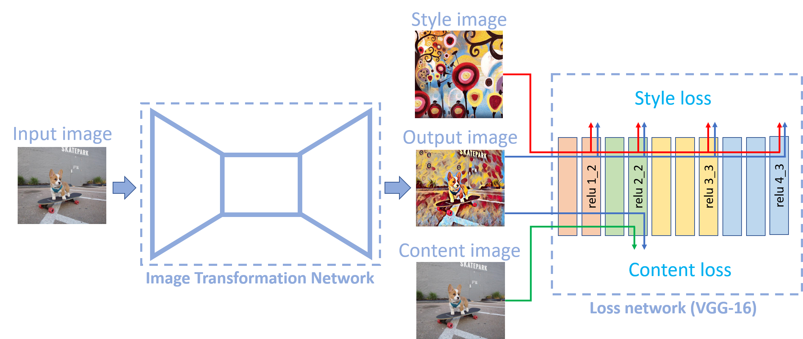

Style Transfer
Let's first define what we are striving for with a style transfer.
Given an input image and a style image, we want an output image with the
original content but a new style. This is outlined in
A Neural Algorithm of Artistic Style
. Below are some examples of stylization.


There are two main components to a style transfer:
(i) Image Transformation Network
(ii) Loss Network

The image transformation network is the model that is trained. It takes in
your content image and returns your stylized output. To clarify, the input image
and the content image are the same for style transfer. Feeding a color image
of shape 3 x 256 x 256, the image transformation network returns
a stylized image of the same shape 3 x 256 x 256.
There are many variations of the image transformation network. A commonly used
one is an
autoencoder
. An autoencoder first learns to represent the data in a smaller dimensional space
(encoder), then learns to reconstruct the data (decoder) to its original size.
The aim of an autoencoder is to learn useful properties of the data. A good way
to think about it is the autoencoder filters out "noise" from the data and
"enhances" useful properties, where you define what is "noise" and "useful", i.e.
background vs foreground.
To check out a popular type of autoencoder, see
UNet architecture
.
We want the style of our input image to be modified, but still
preserve its original content.
The loss network we'll be using is a 16-layer VGG network pretrained
on the ImageNet dataset. From our knowledge of Convolutional Neural Networks,
higher layers capture image content and overall spatial structure, where lower
layers capture lower level features such as colors, textures, common patterns, etc.
A nice visualization of convolutional features can be found
here
. Because of this, our loss network will be using the top layers of the
VGG-16 model, specifically up to layer
'relu4_3'
.
We'll be using the loss network to calculate two losses:
1. Content Loss
2. Style Loss
The formulas for our loss functions come from Johnson's
Perceptual Losses for Real-Time Style Transfer and Super-Resolution
. Where we refer to their Feature Reconstruction Loss as Content Loss,
and Style Reconstruction Loss as Style Loss.
We want the output of our image transformation network to have similar
features to our content image, but not necessarily a pixel to pixel match.
This is controlled by the content loss. We know that \(ax^2 + bx + c = 0\).
$$L_{content} = \frac{1}{C_j H_j W_j}\| \phi_j\left( \hat{y} \right) - \phi_j\left(y \right) \|^2_2$$